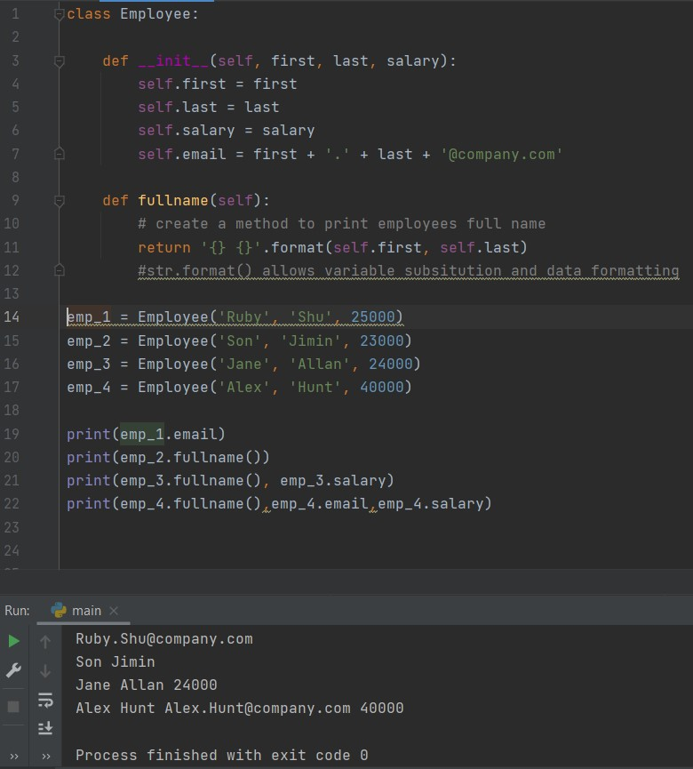

Classes and instances

Why use classes
Classes are used to logically group data so that it's easy to reuse and also build upon if need be.
Data and functions associated with classes are called 'attributes' and 'methods'. A method is a funtion within a class. Attributes are the data which is relevant to that class.
Classes can help to streamline code made it quicker to write. Classes open up the avenue to other object-oriented design methods which I will explore in other posts.
Creating an employee class to streamline email address creation using Python classes
I'm going to demonstrate Python classes by building a simple class including an attribute which creates a company email address, and a method to return the employees' full name.
In object oriented programing with python the __init__(self) is used as a constructor to create classes which can then be called above or added to later on.
Functions inside classes are called methods, here I create a method to return the employees full name.
Instances
When objects are created using classes, these objects are refered to as instances. For example here I have inputed the details of four employees using the Employee() class and then requested different details for each employee.
Here is the code executed in pycharm which is a dedicated python IDE which I usually use to create python scripts. I exported my code over to my Github page in the form of Gists which I have embeded above. Please feel free to follow the link to my Github profile.
The attribute self.email, taking emp_1 as its arguement adds emp_1's first name (Ruby) and last name (Shu) with "." between and adds '@company.com'
References
Schafer, C (2016). Python OOP Tutorial 1: Classes and instances. Available from:
https://www.youtube.com/watch?v=ZDa-Z5JzLYM [Assessed April 1 2022]